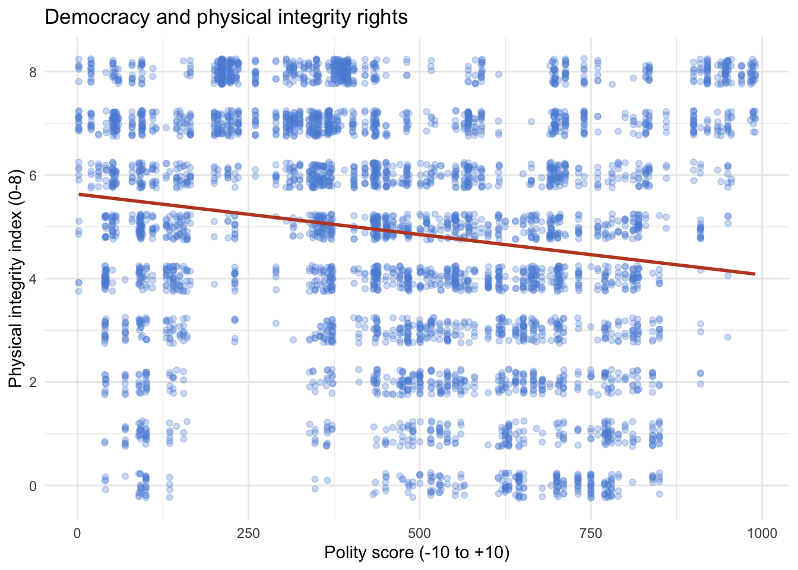

I am interested in exploring data related to political rhetoric or the effects of social media on voting behavior.
library(readr)
ciri <- read_csv("data/CIRI Data 1981_2011 2014.04.14.csv", show_col_types = FALSE)library(dplyr)##
## Attaching package: 'dplyr'## The following objects are masked from 'package:stats':
##
## filter, lag## The following objects are masked from 'package:base':
##
## intersect, setdiff, setequal, unionglimpse(ciri)## Rows: 6,262
## Columns: 28
## $ CTRY <chr> "Afghanistan", "Afghanistan", "Afghanistan", "Afghanistan",…
## $ YEAR <dbl> 1981, 1982, 1983, 1984, 1985, 1986, 1987, 1988, 1989, 1990,…
## $ CIRI <dbl> 101, 101, 101, 101, 101, 101, 101, 101, 101, 101, 101, 101,…
## $ COW <dbl> 700, 700, 700, 700, 700, 700, 700, 700, 700, 700, 700, 700,…
## $ POLITY <dbl> 700, 700, 700, 700, 700, 700, 700, 700, 700, 700, 700, 700,…
## $ UNCTRY <dbl> 4, 4, 4, 4, 4, 4, 4, 4, 4, 4, 4, 4, 4, 4, 4, 4, 4, 4, 4, 4,…
## $ UNREG <dbl> 142, 142, 142, 142, 142, 142, 142, 142, 142, 142, 142, 142,…
## $ UNSUBREG <dbl> 62, 62, 62, 62, 62, 62, 62, 62, 62, 62, 62, 62, 62, 62, 62,…
## $ PHYSINT <dbl> 0, 0, 0, 0, 0, 0, 0, 0, 0, 0, 1, NA, NA, NA, NA, 0, 0, 0, 0…
## $ DISAP <dbl> 0, 0, 0, 0, 0, 0, 0, 0, 0, 0, 0, -77, -77, -77, -77, 0, 0, …
## $ KILL <dbl> 0, 0, 0, 0, 0, 0, 0, 0, 0, 0, 0, -77, -77, -77, -77, 0, 0, …
## $ POLPRIS <dbl> 0, 0, 0, 0, 0, 0, 0, 0, 0, 0, 0, -77, -77, -77, -77, 0, 0, …
## $ TORT <dbl> 0, 0, 0, 0, 0, 0, 0, 0, 0, 0, 1, -77, -77, -77, -77, 0, 0, …
## $ OLD_EMPINX <dbl> 0, 2, 0, 1, 0, 0, 1, 2, 2, 2, 0, NA, NA, NA, NA, 3, 1, 0, 1…
## $ NEW_EMPINX <dbl> 2, 1, 0, 1, 0, 1, 3, 2, 3, 2, 3, NA, NA, NA, NA, 3, 3, 0, 2…
## $ ASSN <dbl> 0, 0, 0, 0, 0, 0, 0, 0, 0, 0, 0, -77, -77, -77, -77, 0, 0, …
## $ FORMOV <dbl> 0, 0, 0, 0, 0, 0, 0, 0, 1, 1, 2, -77, -77, -77, -77, 1, 1, …
## $ DOMMOV <dbl> 1, 0, 0, 0, 0, 0, 0, 0, 0, 0, 0, -77, -77, -77, -77, 1, 1, …
## $ OLD_MOVE <dbl> 0, 0, 0, 0, 0, 0, 0, 0, 0, 0, 0, -77, -77, -77, -77, 1, 0, …
## $ SPEECH <dbl> 0, 0, 0, 0, 0, 0, 0, 0, 0, 0, 0, -77, -77, -77, -77, 1, 1, …
## $ ELECSD <dbl> 0, 0, 0, 1, 0, 0, 1, 0, 0, 0, 0, -77, -77, -77, -77, 0, 0, …
## $ OLD_RELFRE <dbl> 0, 1, 0, 0, 0, 0, 0, 1, 1, 1, 0, -77, -77, -77, -77, 0, 0, …
## $ NEW_RELFRE <dbl> 1, 1, 0, 0, 0, 1, 2, 2, 2, 1, 1, -77, -77, -77, -77, 0, 0, …
## $ WORKER <dbl> 0, 0, 0, 0, 0, 0, 0, 0, 0, 0, 0, -77, -77, -77, -77, 0, 0, …
## $ WECON <dbl> 0, 0, 0, 0, 0, 0, 0, 0, 0, 0, 0, -77, -77, -77, -77, 0, 0, …
## $ WOPOL <dbl> 0, 1, 1, 1, 1, 1, 1, 1, 1, 1, 0, -77, -77, -77, -77, 0, 0, …
## $ WOSOC <dbl> 0, 0, 0, 0, 0, 0, 0, 0, 0, 0, 0, -77, -77, -77, -77, 0, 0, …
## $ INJUD <dbl> 0, 0, 0, 0, 0, 0, 0, 0, 0, 0, 0, -77, -77, -77, -77, 0, 0, …head(ciri)## # A tibble: 6 × 28
## CTRY YEAR CIRI COW POLITY UNCTRY UNREG UNSUBREG PHYSINT DISAP KILL
## <chr> <dbl> <dbl> <dbl> <dbl> <dbl> <dbl> <dbl> <dbl> <dbl> <dbl>
## 1 Afghanistan 1981 101 700 700 4 142 62 0 0 0
## 2 Afghanistan 1982 101 700 700 4 142 62 0 0 0
## 3 Afghanistan 1983 101 700 700 4 142 62 0 0 0
## 4 Afghanistan 1984 101 700 700 4 142 62 0 0 0
## 5 Afghanistan 1985 101 700 700 4 142 62 0 0 0
## 6 Afghanistan 1986 101 700 700 4 142 62 0 0 0
## # ℹ 17 more variables: POLPRIS <dbl>, TORT <dbl>, OLD_EMPINX <dbl>,
## # NEW_EMPINX <dbl>, ASSN <dbl>, FORMOV <dbl>, DOMMOV <dbl>, OLD_MOVE <dbl>,
## # SPEECH <dbl>, ELECSD <dbl>, OLD_RELFRE <dbl>, NEW_RELFRE <dbl>,
## # WORKER <dbl>, WECON <dbl>, WOPOL <dbl>, WOSOC <dbl>, INJUD <dbl>Research question: Does higher levels of economic development lead to better government respect for physical integrity rights?
The hypothesis is that more democratic countries will demonstrate higher levels of respect for physical integrity rights, which is rooted in the institutional accountability theory, which argues that democratic leaders face electoral constraints, opposition scrutiny, and a free press. The key variable is the level of democracy, which I will measure using a democracy index included in the dataset, such as Polity scores. Higher values reflect more democratic political systems. The dependent variable is the Physical Integrity Rights Index, which ranges from 0 to 8 and measures government respect for freedom from torture, political imprisonment, etc, with higher scores representing greater respect for human rights. If the hypothesis is correct, there should be a positive and significant relationship between democracy and the Physical Integrity Rights Index. The hypothesis would be rejected if there is no statistically significant relationship or if the relationship is negative, which would suggest that higher levels of democracy are not associated with improved human rights protections.
library(dplyr)
ciri_clean <- ciri %>%
select(country = CTRY, year = YEAR, physint = PHYSINT, polity = POLITY) %>%
filter(!is.na(physint), !is.na(polity))library(ggplot2)
ggplot(ciri_clean, aes(x = polity, y = physint)) +
geom_jitter(alpha = 0.3, width = 0.3, height = 0.25,
size = 1.5, color = "#5b8dd9") +
geom_smooth(method = "lm", color = "#c04828", se = FALSE) +
labs(
title = "Democracy and physical integrity rights",
x = "Polity score (-10 to +10)",
y = "Physical integrity index (0-8)"
) +
theme_minimal()## `geom_smooth()` using formula = 'y ~ x'
The graph shows a positive relationship between democracy and physical integrity rights: as the Polity score increases (more democratic), the Physical Integrity Rights Index tends to go up too.
model <- lm(physint ~ polity, data = ciri_clean)
summary(model)##
## Call:
## lm(formula = physint ~ polity, data = ciri_clean)
##
## Residuals:
## Min 1Q Median 3Q Max
## -5.5675 -1.5865 0.2606 1.8629 3.9125
##
## Coefficients:
## Estimate Std. Error t value Pr(>|t|)
## (Intercept) 5.6314378 0.0688055 81.85 <2e-16 ***
## polity -0.0015596 0.0001308 -11.93 <2e-16 ***
## ---
## Signif. codes: 0 '***' 0.001 '**' 0.01 '*' 0.05 '.' 0.1 ' ' 1
##
## Residual standard error: 2.305 on 4910 degrees of freedom
## Multiple R-squared: 0.02815, Adjusted R-squared: 0.02796
## F-statistic: 142.2 on 1 and 4910 DF, p-value: < 2.2e-16library(broom)
library(knitr)
tidy(model) |>
kable(digits = 4, caption = "Regression Results: Physical Integrity Rights on Democracy")| term | estimate | std.error | statistic | p.value |
|---|---|---|---|---|
| (Intercept) | 5.6314 | 0.0688 | 81.8458 | 0 |
| polity | -0.0016 | 0.0001 | -11.9265 | 0 |
To further examine the relationship between democracy and physical integrity rights, I ran a linear regression using physical integrity rights as the dependent variable and Polity score as the independent variable.
The results show that the coefficient on Polity is negative (-0.00156), indicating that higher levels of democracy are associated with slightly lower levels of physical integrity rights. However, the effect is extremely small in magnitude. The relationship is statistically significant (p < 0.001), meaning it is unlikely to be due to random chance.
This finding contradicts the initial hypothesis and the pattern suggested by the visualization, which showed a positive relationship. One possible explanation is that the relationship is more complex than a simple linear trend, or that other factors not included in the model are influencing human rights outcomes.